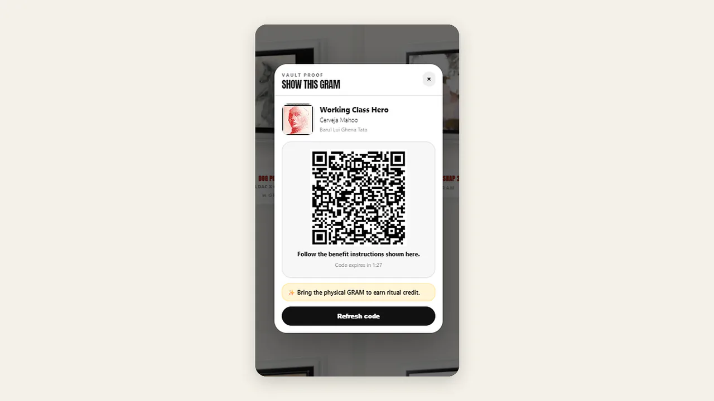

Crown & Ownership
What ownership means, what the crown shows, and how to tell whether a GRAM is linked to your account.
What ownership means
A GRAM is considered yours in the platform when it is linked to your account. That account-level linkage is the main ownership signal.
What the crown means
The crown is the visual owner-state signal for a GRAM. When a GRAM is successfully claimed by the correct account, the crown indicates that owner state.
Why the crown may not appear
- The claim may not be complete yet.
- You may be viewing the GRAM with a different account.
- The page may need a refresh after the ownership state updates.
How to verify ownership
The most reliable check is whether the GRAM is currently linked to your account. If Siggy says the current GRAM is linked to your account, that is the main ownership confirmation.
Visual guide

